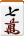
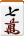
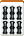
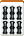
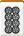
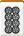

本篇中會解釋幾個只有在某些地方才有的特殊規則版本，以及一些相關用語。 這裡面有些規則是比較少見的，網路上很難找到夠完整的參考資料，因此部分規則我只能講一個最基本的概要。如果有人有更完整的參考來源，歡迎提供給我。
抽出懸賞牌（抜きドラ）
抽出懸賞牌是某些特別的玩法（例如底下會介紹的花牌或三人麻將等等）中會出現的牌。在該類玩法中會把某幾張牌規定成是抽出懸賞牌，而每當玩家摸到這些抽出懸賞牌的時候，他必須將該牌移到旁邊攤開變成曝光牌，然後再摸一張牌補進手牌中；這個補充的牌有兩種模式，一種是從取自下一張壁牌，而另一種比較常見的是取自嶺上牌（若是採這種型式，則嶺上牌必須增加以保證夠拿，總共有幾張抽出懸賞牌就應該要增加幾張嶺上牌）。而稍後，如果該玩家胡牌，則他所持有的每一張抽出懸賞牌都可以增加一飜（但是跟懸賞牌一樣，他必須有別的役才能胡牌）。 視當前的玩法而定，抽出懸賞牌主要有兩種模式：
抽出懸賞牌非一般牌，玩家在拿到抽出懸賞牌的時候都必須移到旁邊攤開，不能留在手牌中也不能打出（否則以犯規論）。
抽出懸賞牌也可以當作一般牌使用，可以留在手牌中構成胡牌的一部份也可以打掉。但在這種模式中，唯有將它抽出到一旁它在稍後才具有懸賞牌的作用。玩家可以在任何一次自摸之後將手牌中的抽出懸賞牌抽出，但是不能在叫牌之後進行抽出的動作。 在一些版本當中，把抽出懸賞牌抽出的這個動作如同暗槓與叫牌一樣具有破壞一巡的作用，亦即它能使得諸如一發等等的東西無效化。
三人麻將（三人麻雀）
通常麻將應該是四個人玩的遊戲，但是因為不見得總是有辦法湊到四個人來打牌，因此在麻將發展的歷史當中人們也創出了所謂的三人麻將，簡稱「三麻（サンマ）」。三麻因為相對來說是比較不正式的玩法，所以規則在分歧程度上比通常的四人麻將還要來得大。底下我們以比較傳統的玩法為主做介紹。 傳統的三人麻將所使用的道具，是把一般的一整副麻將牌當中去掉二至八萬後所剩下的 108 張牌（有些版本中會把五萬也留下來）。至於遊戲規則方面，跟原本的四人麻將有如下的幾點差異： 沒有北家，三個玩家從每局親家依逆時鐘方向分別就是東家、南家跟西家。 一場只有三局（三人分別做莊之後便換場）。以半莊戰來說，總共就只有六局。 堆牌的時候，每個玩家分別堆 18 幢牌共 36 張。擲骰子的時候，2、5、8、11 點表示從南家開門，3、6、9、12 為西家，4、7、10 為東家。 不能叫吃（至於碰跟槓則依舊）。 因為沒有二至八萬，因此沒有三色同順這個役；三色同刻倒是有可能出現，不過承認與否要看版本而定。 剩下的萬子依序構成懸賞指示的一個循環，即一萬指示九萬（或者如果五萬有留著則一萬指示五萬、五萬指示九萬）、九萬指示一萬。 「北風」這張牌的常見處理方式有兩種。 第一種是當作三個人共通的役牌，無論誰拿到它的刻子或槓子都有一飜。 另一種則是把它當作是抽出懸賞牌來用。在這種玩法當中，為了讓大小四喜和國士無雙能存在，北風也可以當作一般牌使用。 某些版本中會有對應的「三風連打」和「三立直」流局。 因為少了一個人，持有點和歸還點通常都比四人麻將高出許多（具體數字因版本而異）。 至於點數計算的部分，因為少了一個玩家，存在有非常多種不同的處理方式，主要有下面幾種：
自摸損（ツモ損）：完全按照四人麻將時的賠點方式來賠。這種方式當中，因為少了一個玩家，自摸和時就會少賺到一個人的點數。
千點加符（千点加符）：在自摸和的情況當中，兩個他家分別要比四人麻將的情況多賠一千點。
丸取（丸取り）：這種方式中自摸和賺取的總點數會跟榮和一樣。子家自摸的情況中，把榮和時的點數依照 2:1 的比例分別由親家和另一個子家賠出；親家自摸的情況中，則由兩個子家平分榮和時應賠的點數。
平分北家：自摸和的情況中，把四人麻將中北家應賠出的點數由另外兩人平均分攤。換句話說，當子家自摸的時候，會把榮和點數以 5:3 的比例分給另外兩人，而親家自摸時一樣是榮和點數兩人平分。這算是「丸取」的一種變形。
折半支付（折半払い）：自摸和的時候不管是親家還是子家，都是把榮和時的點數由另外兩人平分賠出。
親三倍：子家自摸的情況把本來北家應賠的點數全部由親家分攤（換句話說此時親家的賠點是另一個子家的三倍），而親家自摸的情況一樣由兩個子家平分榮和點數。
倍取（倍取り）：自摸和的情況中，另外兩個人皆賠出榮和時的賠點，也就是說自摸和賺到的點數是榮和的兩倍。
榮和點數降低：自摸和時的賠點跟四人麻將中完全相同，而反過來降低榮和的賠點使得跟自摸和一致；亦即子家榮和時放槍者賠出基本點的三倍、而親家榮和時放槍者賠出基本點的四倍。
除了上述的傳統三人麻將玩法之外，還有例如關東三麻（東天紅）、關西三麻、京都三麻等等的地方玩法，這邊就先不談那麼細了。
飛梭麻將（ブー麻雀）
飛梭是在關西地區盛行的玩法，它跟標準的日本麻將有三個主要的差異。 首先，一開始的時候每個玩家的點數都只有 8000 點。 其次，只要有任何一個玩家達到了 16000 點，整場遊戲就算結束（如果一直沒有人達成，那麼打到全莊結束為止）。也有一種玩法是只要點數最高的玩家和點數最低的玩家相差 8000 點以上遊戲就結束（這在漫畫《勝負師傳說》中也出現過）。最後，遊戲結束時得點計算也不同，不過這邊就先不講那麼仔細了。 飛梭麻將有幾個特色。首先是整個遊戲進行的時間相當短，經常打沒幾局就已經結束。其次，這種點數計算方式使得大逆轉變得更有可能。
赤懸賞（赤ドラ）
赤懸賞大約是從 1960 年代開始興起的玩法。在赤懸賞規則當中，一整副麻將的 136 張牌裡面會有幾張所謂的「赤牌」，也就是整張牌全部用紅色著色的牌，而胡牌的時候手牌裡面有幾張赤牌就可以增加幾飜，稱為赤懸賞，是懸賞的一種，因此也是不能算在起飜當中。 至於會有哪些赤牌則是視規則版本而不同，現在最普遍的做法是五萬、五筒和五索各一張（有時會再多一張五筒），也有些比較罕見的規則是玩三筒或七筒等等。


 

 和
和
例如在上面的牌型當中，由於有兩張赤牌，因此役名就是「斷么九、懸賞二」。不過在少數規則當中，如果赤牌是出現在副露當中就屬無效，在這種玩法當中上面的就只有懸賞一而已。 赤懸賞在日本也是很普遍的玩法，因此買整套麻將的時候經常會附帶四張替換用的赤牌，只要跟原本的正常牌換過來就可以玩赤懸賞規則。通常附帶的是赤五筒兩張、赤五萬和赤五索各一張。 在一些規則中，假如胡牌的時候收集到所有的三張赤牌，那麼原本的三飜會被升級成六飜，這是額外獎勵。 現在有一些赤牌上面會額外再畫上一個小紅點以更清楚地標示出這是赤牌，或者也有在赤五筒的中間鑲上寶石的設計。
燒鳥（焼き鳥）
所謂的燒鳥規則是指，如果有人在整場麻將遊戲中從頭到尾沒有胡過一次牌，那麼這個人在最後計算得點的時候必須罰點。至於要罰多少則有各種不同的方式，例如一種是沒胡過牌的人要罰給胡過的人每人 10 個得點等等。 為了表示誰還沒有胡過牌，在玩燒鳥規則的時候會在每個玩家面前擺一個燒鳥標記，而每個玩家第一次胡牌之後就可以把自己的燒鳥標記收起來，表示自己已經胡過牌了。如果所有的人都有胡過牌，那麼就沒有人要罰點了；不過也有的規則是說，在這種情況下所有的人要重新把燒鳥標記拿出來重來，這稱為「重燒（焼き直し）」或「鳳凰（フェニックス）」。 燒鳥規則在日本相當普遍，因此很多地方在購買整套麻將的時候會一併附上燒鳥標記板。
祝儀（チップ）
祝儀是一個和點數分開計算的系統，在祝儀規則當中每個玩家除了點棒之外一開始也會分配到一些祝儀，而當有人胡了一些特殊的役（通常是「一發」、「裏懸賞」、「赤懸賞」和役滿役，實際情況視規則版本而定）的時候，放槍的人除了賠點之外還要額外支付祝儀；或者如果是自摸胡牌，那麼三家都要給祝儀。 至於祝儀最後要怎麼換算，那也是看規則而定，各個版本的玩法各不相同。有些會變成比賽大會當中的特殊單位，也有一些會換算成點棒或最終得點。
割目（割れ目，或寫成ワレメ）
在割目規則當中，每局裡頭配牌時骰子擲出點數所指定的玩家（也就是開門位置的玩家）無論是賺點數還是賠點數都要以兩倍計算。比方說，如果骰子擲出八點，那麼當北家胡牌的時候，他所賺到的點數要以原來的兩倍計算，也就是要賠點給他的人要賠兩倍；反過來，如果北家放槍、或者其他人自摸胡牌，那麼北家要賠的點數也會變成原來的兩倍。不過，通常在這種規則當中，沒聽牌罰點跟積符是不用兩倍計算的。 這個規則由於電視節目「THE われめ DE ポン」的採用而變得格外有名。
青天井
通常計算點數的時候基本點有 2000 點的上限，超過的話就叫滿貫、跳滿……等等，而青天井規則簡單來說就是打破這個限制：無論胡了幾飜幾符，一律都用基本公式計算點數（其中國士無雙型規定為 20 符）。此外，有些版本在胡了役滿牌的狀況之下還是會計算底下較小的役。 利用青天井計算出來的點數會非常地可怕，隨便一個稍微大一點的牌就足以要了所有人的命。例如，光是八飜 40 符的牌就有 163900 點之多。要是胡了役滿牌，可能把雀莊的點棒全部拿出來也不夠賠。
先付與後付
先付（先付け）與後付（後付け）是一個比較複雜的概念。所謂的先付，指的是「事先確定自己已經有役了」，而後付相對的就是指「事後才確定自己有役」。仔細說起來的話，先付具有兩個意義，一個是說「第一個副露必須把役確定下來」，另一個意義是「胡牌之前必須確定會有役」。底下我們用實際的例子來說明。 第一個副露必須把役確定下來
 

 



假設現在我們的手牌長得像上面這樣，那麼我們有兩個方向可以發展，一個是碰青發，這樣就有役；另一種方法是把青發丟掉做斷么九，這樣也有役。假定我們已經下定決心要做青發一飜，而當牌局進行到某個階段，上家丟出了六筒，因為我們的目標是胡青發一飜，因此我們不妨就吃起來。
丟掉


然後又過了幾巡之後終於有人丟青發，於是我們就碰：
丟掉


這樣就聽牌了，聽一四索。但是注意到在這個例子當中，在我們確定已經做出青發一飜之前就吃牌，這是一個有點冒險的舉動，因為萬一之後再也沒有出現青發，那麼這個牌既沒有辦法立直也沒有辦法門清自摸，於是在通常的規則當中，除非遇上四種偶然役，或者把青發丟掉改做斷么九之類的，要不然就無法胡牌。這種在還沒有確定有役之前就叫牌、之後才確定做出役的行為，就稱為「後付」。 接著我們考慮同一個故事的不同發展，假設回到一開始，當上家丟六筒的時候我們基於安全考量不吃，然後之後跟剛才一樣碰了青發：
丟掉
然後又過了幾巡，有人丟了一索，我們又吃：
丟掉


於是聽六九筒。在這次個情況中，我們是先確定了自己有役了之後才繼續叫牌，這樣的行為稱為「先付」。 總之，所謂「第一個副露必須把役確定下來」，意思是說第一個副露必須是最後胡牌的役的一部份，要不然的話，胡牌的役必須全部由扣除副露的部分給出。 胡牌之前必須確定會有役


假設我們現在的手牌是長這樣，這是三、六、九筒的三面聽牌，如果胡了九筒就是一氣通貫，但是聽的另外兩張牌沒有役，這個例子中我們是在不確定一定能胡到役的情況下叫牌，因此仍然算是「後付」。但如果手牌是：

這個例子中我們只聽一張七筒，而且七筒一定會導致一氣通貫，所以這算是先付。 總而言之，所謂「胡牌之前必須確定會有役」的意思就是，聽的每一張牌都確定會導致某種役，這樣就算。 完全先付（完全先付け） 而所謂的完全先付規則（簡稱完全），就是指不允許上面所述的兩種後付的動作，胡牌一定要符合先付的兩種條件，不然的話就算是錯和。除此之外，完全先付還規定斷么九必須門清、不可以只胡偶然役（某些版本甚至規定不可以只胡門清自摸）、而且不准振聽立直也不准立直後漏看。 完全先付規則又俗稱「無無」（ナシナシ），而相對地允許後付的規則就稱為「有有」（アリアリ）。由於「無無」規則相當地複雜而且也很不方便，因此絕大多數版本（尤其是關東地區）的規則都是採「有有」制。然而，某些地方還是會採用這套非常嚴密的「無無」規則，或者採用「無無」的一部份，尤其是禁止非門清的斷么九（食い断なし）這一點。
鷲巢麻將（鷲巣麻雀）
這是福本伸行所畫的、以激烈的麻將賭博為主題的漫畫《鬥牌傳說》（原名為「アカギ ～闇に降り立った天才～」）裡面一個叫鷲巢的反派角色所發明的獨特玩法，規則幾乎和正常的日本麻將一模一樣，唯一的差別在於使用的麻將牌每四張同樣的牌當中有三張是透明的、可以直接從背面看穿，只有一張是看不穿的（這樣的麻將牌現在通稱為「三透牌」）。在這種玩法當中，由於對手絕大多數的手牌都可以看穿，因此表面上看起來似乎可以更加容易防禦，但是問題就在於那些少數幾張看不穿的牌反而更增添了許多令人猜忌的成分。 在玩鷲巢麻將的時候不需要堆牌，牌全部都放入桌子中央的洞中自動洗亂，而玩家每次摸牌都將手伸入洞中自己拿出一張牌（為了避免玩家用觸覺辨識牌面，必須戴上手套）。懸賞指示牌則是另外拿出放在一旁；表懸賞和裏懸賞指示牌是由公證人取出、而槓懸賞指示牌則是作槓的人自己拿的。 雖然這原本只是漫畫當中發明的一種玩法，但是後來真的有麻將製造商把三透牌做了出來、打著鷲巢麻將的招牌來販售（但價格並不便宜），而且好像還有不少人真的在玩呢。
地雷遊戲「17 步」（地雷ゲーム「17 歩」）
這是出自福本伸行的另一部作品《賭博墮天錄》（賭博堕天録カイジ）的玩法，是兩人對賭專用的麻將遊戲。17 步必須使用自動麻將桌來玩，參與的兩人對面入座。在每一局開始之前必須決定誰先攻（以骰子或猜拳等任何方式皆可），先攻者可以自行從側面的兩座山（即不屬於任何玩家面前的山）當中把任何一幢的上層牌掀開作為懸賞指示牌，相對地該牌的下層牌稍後就會是裏懸賞指示牌。 遊戲的第一階段中，兩個人都有三分鐘的時間（以一旁的沙漏計時）準備自己的手牌。首先玩家將自己面前的山一共 34 張牌全部立起面朝自己，玩家可以從中隨便選擇 13 張牌組成聽牌的狀態，不過這個聽牌必須有滿貫以上（可以把立直的一飜和表懸賞牌也算在內，總之胡牌的時候只要在裏懸賞打開之前就已經達到滿貫便算合法）。組成手牌之後，在之後的遊戲進行中都不能夠變更手牌的狀態（也就是說，這個遊戲等於是從雙方都已經立直的狀態開始的）。如果玩家沒有辦法用他的 34 張牌組成滿貫聽牌、或是三分鐘時間到的時候還沒組好手牌，那麼在這一局當中該玩家就必須放棄胡牌，只能小心避免放槍。組成手牌之後，兩個玩家各自會剩下 21 張牌。 接著三分鐘的準備時間結束之後，便由先攻者開始、兩人輪流從自己剩下的 21 張牌當中挑一張打出去，直到兩個人各自都丟了 17 張之後本局便宣告流局（是以有「17 步」之名）。如果丟出去的牌剛好是對方聽的牌，那麼對方便可以榮和而贏得這一局；於是這個遊戲只有榮和、沒有自摸和。此外，這個遊戲同樣也有一般的振聽規則，一旦處於振聽狀態就不能胡牌了。 17 步所採用的役大致跟通常役是一樣的，河底撈魚和一發也同樣存在。幾個不同在於，雖然兩人都是從一開始就立直聽牌，但是只當作立直一飜而非雙立直的兩飜；而且基於這個遊戲的本質也沒有採用嶺上開花和流局滿貫。此外，參與遊戲的兩人在每一局當中永遠分別固定為東家和西家，亦即玩家各自的自風牌是不變的（而因為沒有所謂半莊的進行，所以沒有場風牌）。最後，通常的麻將中親家可獲得約 1.5 倍點數，但 17 步中兩人的點數是對等的。 賭資計算的部分，假設雙方都下注 100 萬，那麼當胡滿貫的時候就是賠基本賭資 100 萬，跳滿為 1.5 倍的 150 萬、倍滿為 200 萬、三倍滿為 300 萬、役滿為 400 萬、雙役滿為 800 萬，依此類推。